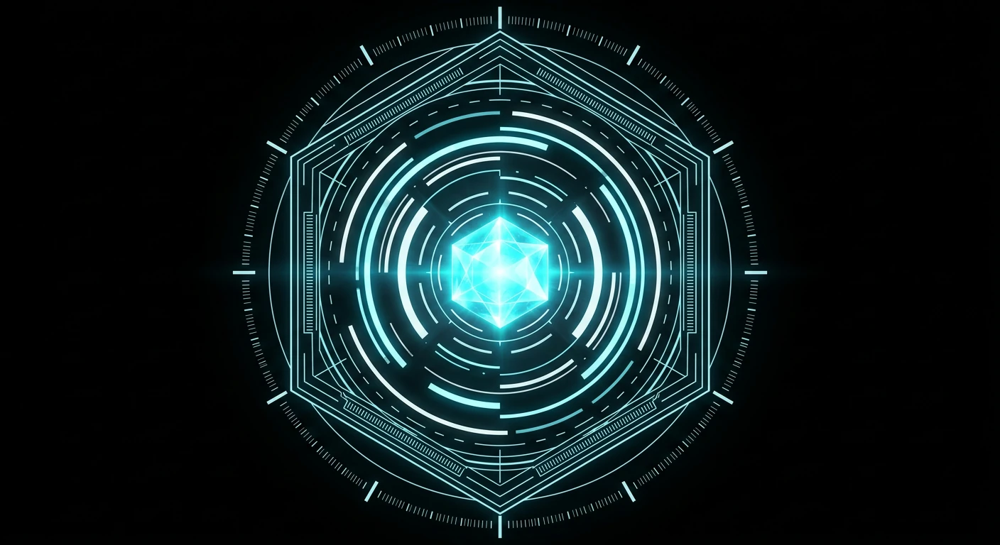
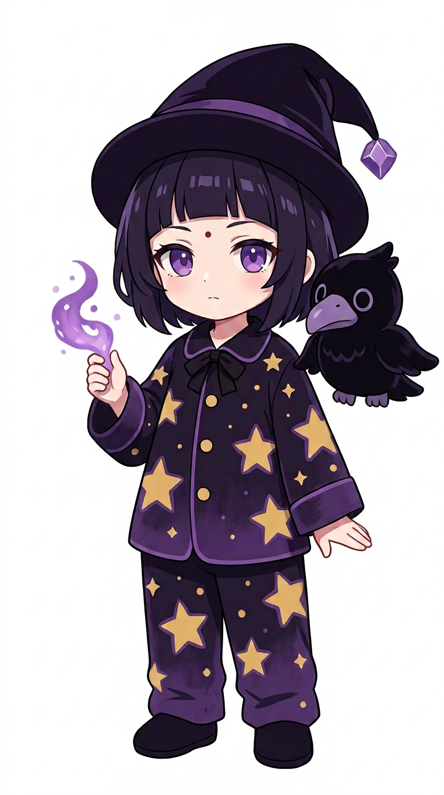

Ночная смена. Курьер, голос в рации и город, который резонирует на частоте, которой нет ни в одном справочнике.

Дождь над Тэцубой не заканчивается третью ночь подряд. Порт гудит, как трансформатор на грани.
Аудиофайлы ещё не добавлены: ползунки уже готовы принять шины движка.
Системный prefers-reduced-motion останавливает и CSS-петли, и WebGL-цикл: слой рендерит кадр по требованию, материал остаётся.